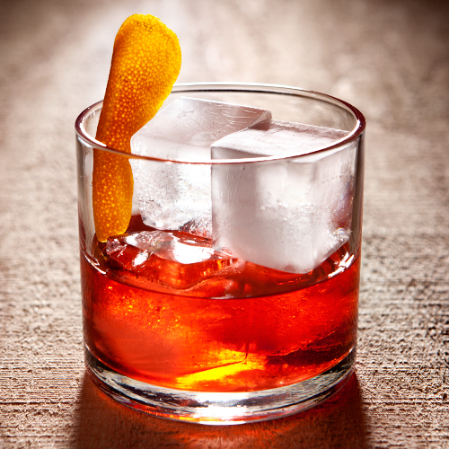

Old Fashioned

Recipe
- 1. Muddle Together a Suger cube and bitters
- 2. Add Half the Burbon and 2 Ice cubes
- 3. Stir
- 4. Add an Orange Peel and its Oils
- 5. Stir
- 6. Add the Rest of the Burbon and 2 More Ice cubes
- 7. Stir
- 8. Garnish with a Red Cherry and a Lemon Twist
Ingredients
- 75ml Burbon
- Orange Peel
- 3 Dashes of Angostura bitters
- Red Cherry
- Lemon Twist
Description
The Old Fashioned is a cocktail made by muddling sugar with bitters, then adding alcohol, such as whiskey or brandy, and a twist of citrus rind. It is traditionally served in a short, round, 8–12 US fl oz (240–350 ml) tumbler-like glass, which is called an Old Fashioned glass, named after the drink. The Old Fashioned, developed during the 19th century and given its name in the 1880s, is an IBA Official Cocktail. It is also one of six basic drinks listed in David A. Embury's The Fine Art of Mixing Drinks.